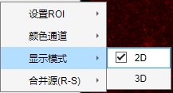
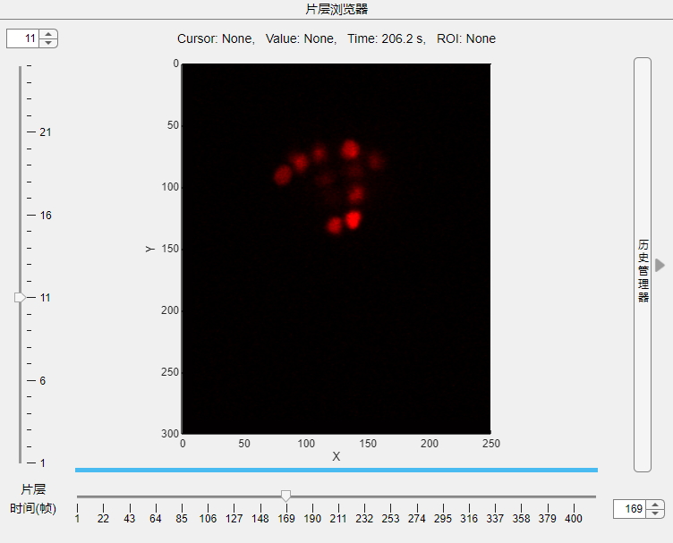
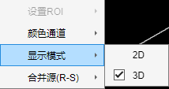
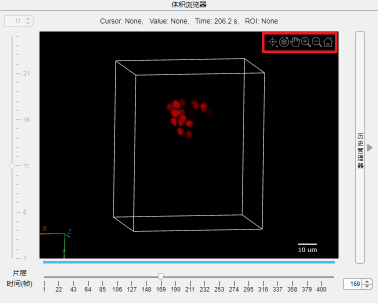

3.2.3 显示模式

当前显示模式为2D时，浏览窗口如下图所示。您可以使用软件中所有功能。

此时浏览器为 片层浏览器, 片层与时间均可选中。

当前显示模式为3D时，浏览窗口如下图所示。当前显示模式下部分功能将禁用。

此时浏览器为 体积浏览器, 片层选择将禁用。您可以使用图像右上角交互工具完成操作。
交互工具从左至右依次为：点/线选择工具(仅MATLAB>R2023b可用)、旋转、平移、放大、缩小、还原。
左下角为快速坐标轴，点击可迅速切换至对应法平面。右下角为标尺，这取决于您的显微镜分辨率设置。